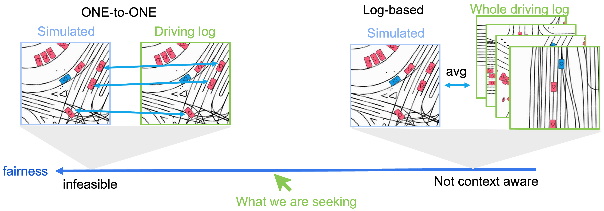
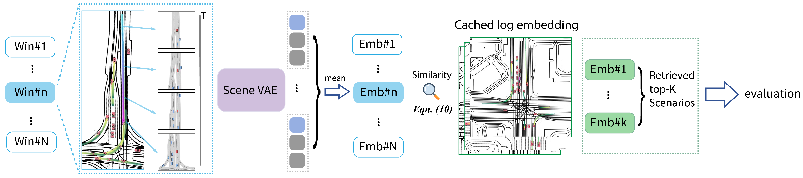

Retrieval-based Long-term Traffic Evaluation (RTE)
Why Standard WOSAC Metrics Fail in Long-Horizon Simulation?

LEFT: impossible under long-term setting, since no agent level matching available after a few seconds. RIGHT: Context-blind and unfair, forcing local scenarios to match global average statistics.
Implementation

Pipeline of RTE: Instead of using global log distribution as ground truth for histogram matching, we leverage a pre-trained scene VAE to anchor K semantically similar real-world scenarios as reference for evaluation, which significantly improves the correlation with long-term simulation fidelity.
Is RTE Fair?

Fairness of RTE: We calculate 63 different rollouts under short-term WOSAC, log-based histogram matching, and RTE evaluation, and compute the correlation between the evaluation results and standard WOSAC. RTE achieves a significantly higher correlation (r=0.83) than log-based histogram matching (r=0.74).